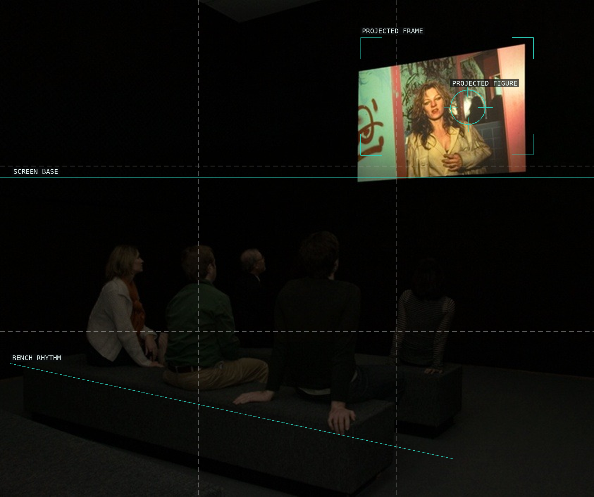
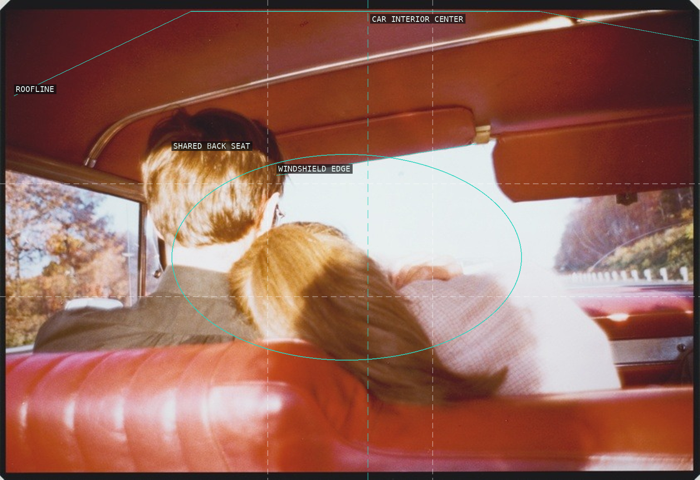
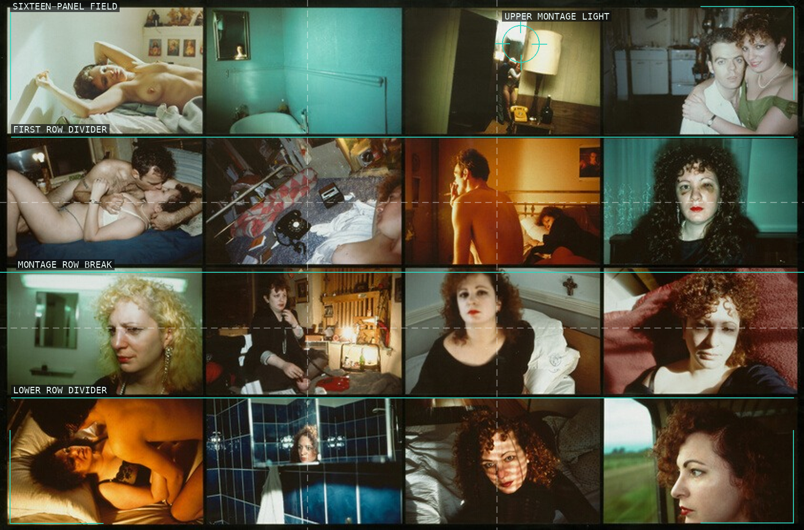
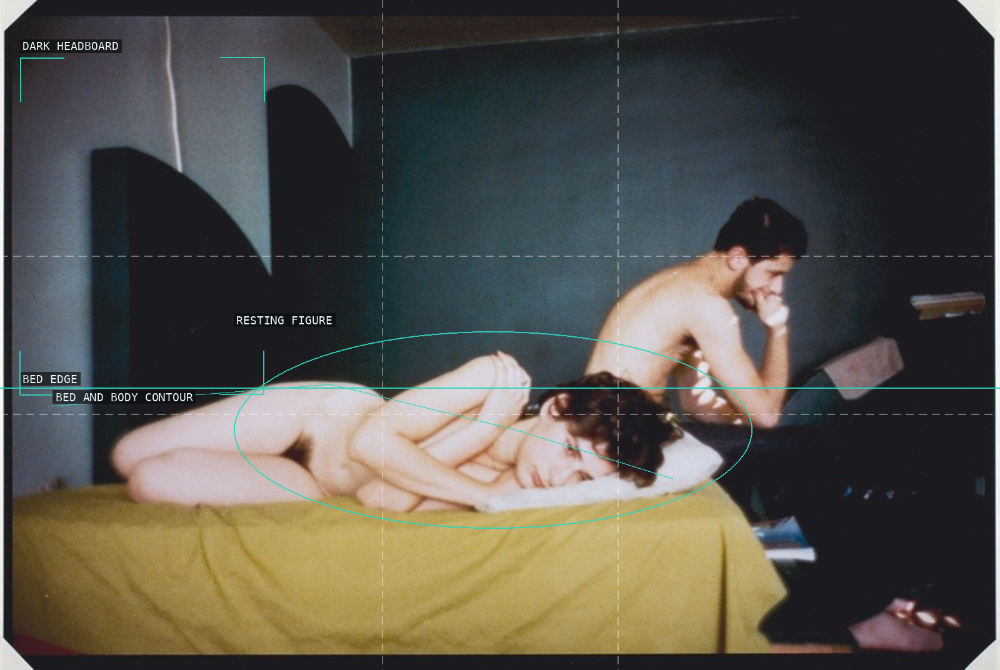
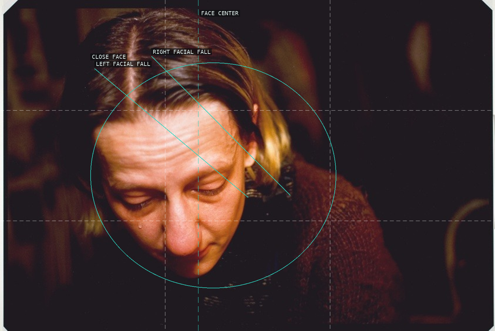
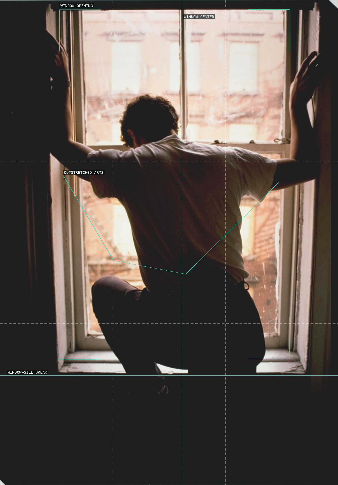

/* nan-goldin - proofs */
6 plates. Deterministic overlays rendered by the composition-analysis skill.

01-the-ballad-of-sexual-dependency
A projected frame holds a room of viewers.

02-kim-and-mark-in-the-red-car
Roofline and red upholstery enclose the pair.

03-self-portrait
A sixteen-panel montage becomes one field.

04-j-and-richard-chicago
Bed edge and bodies occupy a shallow room.

05-suzanne-crying-nyc
Close facial structure leaves no neutral distance.

06-clarence-in-the-window-with-gun
A bright window and dark figure press together.